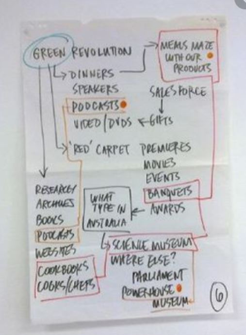
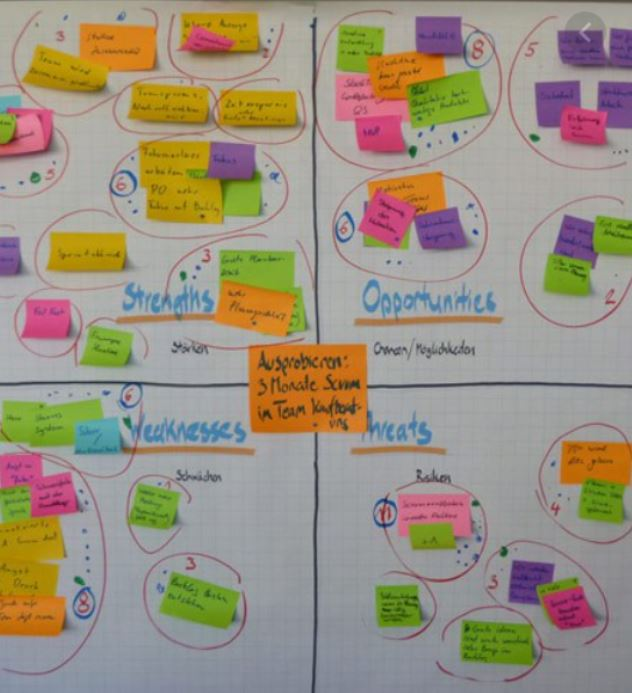
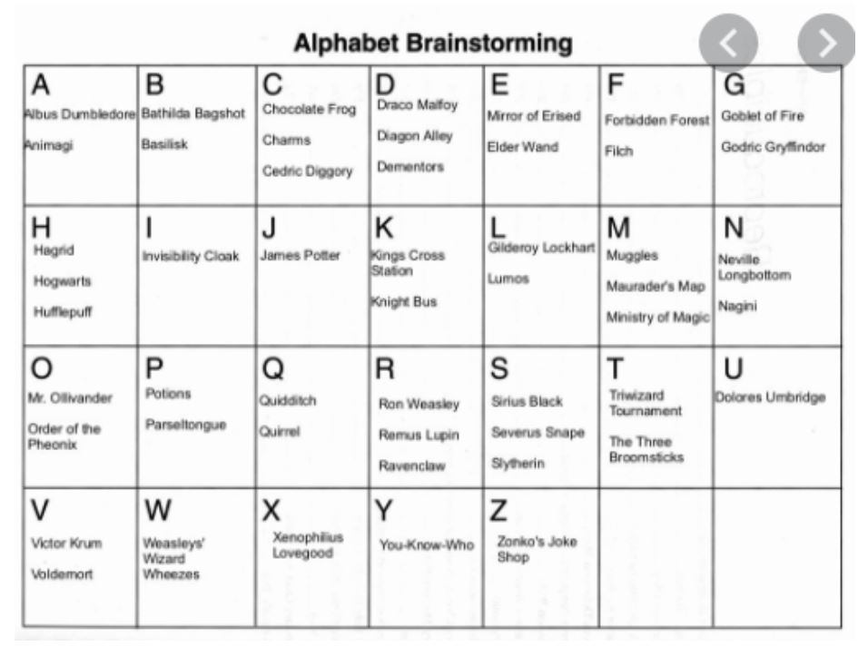
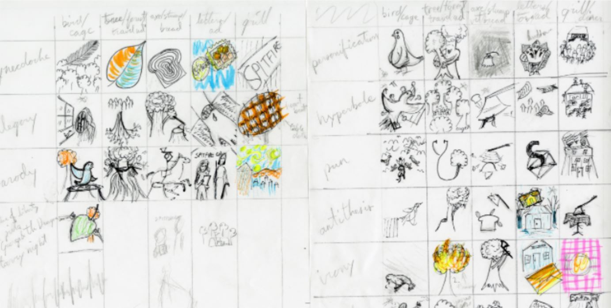

Home |
Recipes |
Articles |
Contact |
Art gallery |
As I was pondering about the next blog post I suddenly came across our tagline "GET CREATIVE".This phrase literally stormed my brain to come up with something fresh, interesting stuff that would rejuvenate our brains. So yeah! as we unwind our creative surprise let us first dig into "what is creativity?".Well, the answers may vary and there is no particular definition to it. But I think of it as the act of turning fresh and imaginative ideas into reality that will be fruitful in solving certain issues or interestingly conveys a certain message (as seen in case of various forms of art). So this conveys idea is the key to creativity! But most of the time when we come across a certain problem these ideas don't strike to us all of a sudden. Moreover, when certain ideas are organised and put together it leads to a better idea and hence a better solution to the problem. As the old proverb goes,
"Two heads are better than one", So it's always better when a group of people work out the solution to a particular problem. But when many people are involved to avoid any confusion and chaos and to come up with a solid solution to the given problem we use various creativity tools. Brainstorming is one such tool to aid in creative thinking. So yes this post gonna be focused on brainstorming technique and its various types.
So, "What do we mean by brainstorming?" so maybe stated as a multidisciplinary group coming together to discuss and generate ideas to solve a stated problem within a certain stipulated time interval. This includes various techniques which may be performed with groups at a particular time or with lapses between the communication. So there are various principles of brainstorming which must be followed for a successful outcome:
*it must be taken as a group activity
*group should include not more than 10 people
*a fixed time period must be allocated
*no mockery or criticism of others ideas is allowed
*problem should be clearly stated
*papers, pens, post-its, flips, markers etc should be provided
Brainstorming consist of various types. In this post, we will be looking through the top five brainstorming technique
Flip Charts
Flip charts are a great entry into brainstorming techniques. Here a group of individuals are made to sit in front of a flip chart and a problem statement is clearly explained to them. Each individual comes up with a certain solution to that problem(ideas) which is noted down by a facilitator on the flip chart. After certain ideas have come up and we see the energy of the group falling and no new ideas coming out the session is ended. From the ideas noted on the flip chart, certain ideas are picked up by unanimous agreement for further implementation.
Post-It
The birth of post-it was for brainstorming. These have a great size to focus and carry a single idea at a particular time. The best thing about post-it is it can be peeled off and pasted back several times. Therefore helps us to group similar ideas which lead to a combination of similar kind of ideas. Review the ideas generated collectively and ask the participants to select their favourite idea.
Alphabet Brainstorming
In this technique after the problem statement is explained we use the letters of the alphabet to find solutions starting with a particular letter. First, we start with letter A and moving on. Ideas with the same alphabet are grouped. Hence it helps us to get a diverse set of ideas. The session would end by reviewing the ideas generated.
Brainwriting
The key to this technique is silence. The silent environment always helps us to focus more and think better. It was developed by Horst Geschka at the Batelle Institute in Frankfurt (Geschka, 1993). Blank cards are distributed to each participant divided into several groups. The participants sketch their ideas and pass them on to the next group in a particular direction. The participants are asked to review the card received and see if it can inspire a new idea. Collect the cards after 10-15 mins. Review the ideas collectively generated.

Grid Brainstorming
Grid brainstorming mostly consists of a 3x3 grid. The number of columns dictates the number of ideas needed to initiate the process. The number of rows dictates how many times the idea is passed on and developed. By the end of a session, many ideas have been generated and developed by using the inspiration of previously generated ideas. Here the participants are provided with the grid and asked to fill the top rows with sketches on of their ideas. When it's done ask the participants to place the sheets in the middle so that it can be worked on by some other participant. Once the grid is complete, the ideas are reviewed.
Methods of thinking have evolved and have been taught throughout history. These methods have been demonstrated by Ancient Greek philosophers such as Socrates, Plato, and Aristotle, through to serial entrepreneurs changing our world today, such as Elon Musk and Richard Branson. So let's learn these techniques and implement them in our day to day life so that we have a creative solution to our problems. Stay cheerful! Stay creative!
Activity for you- Use alphabet brainstorming and find 3 solutions to deforestation using ideas which consist only the initials of your name.